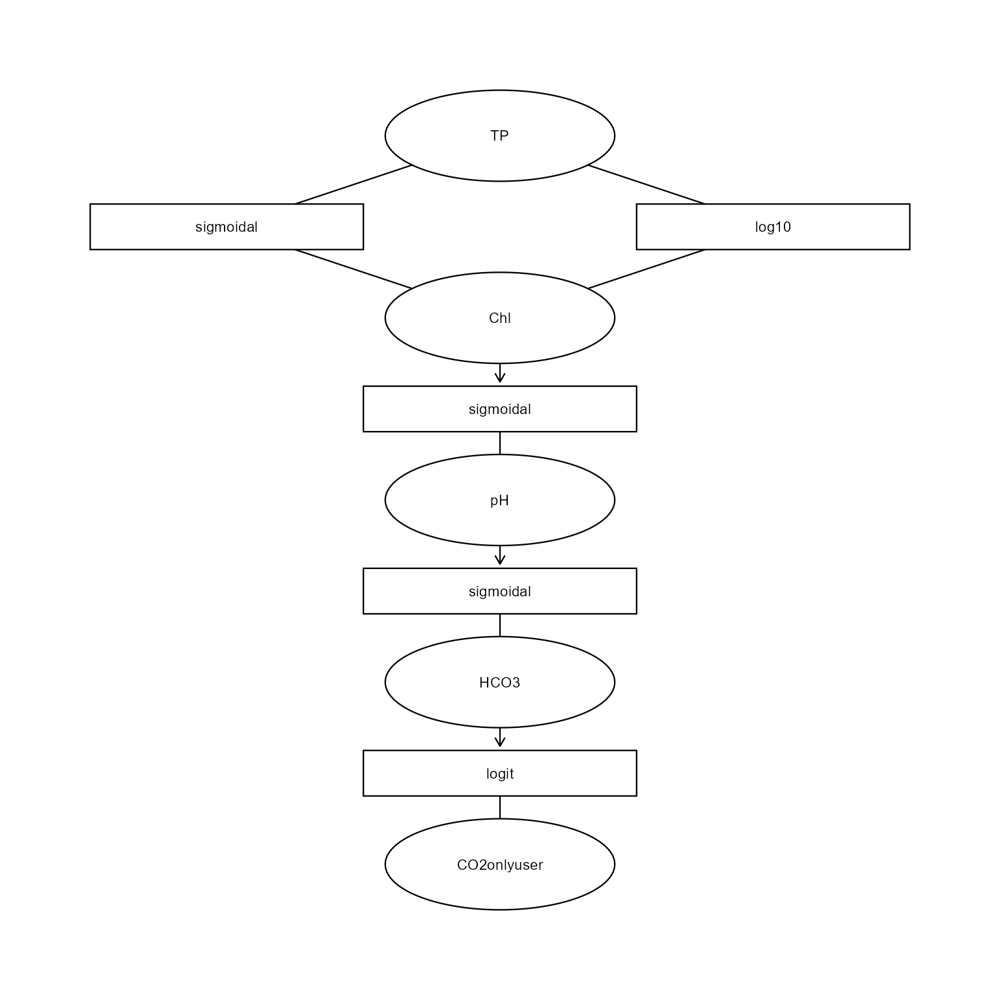
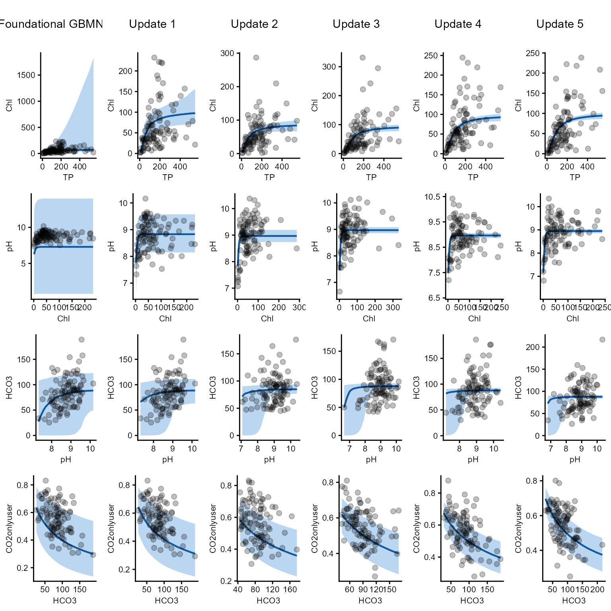
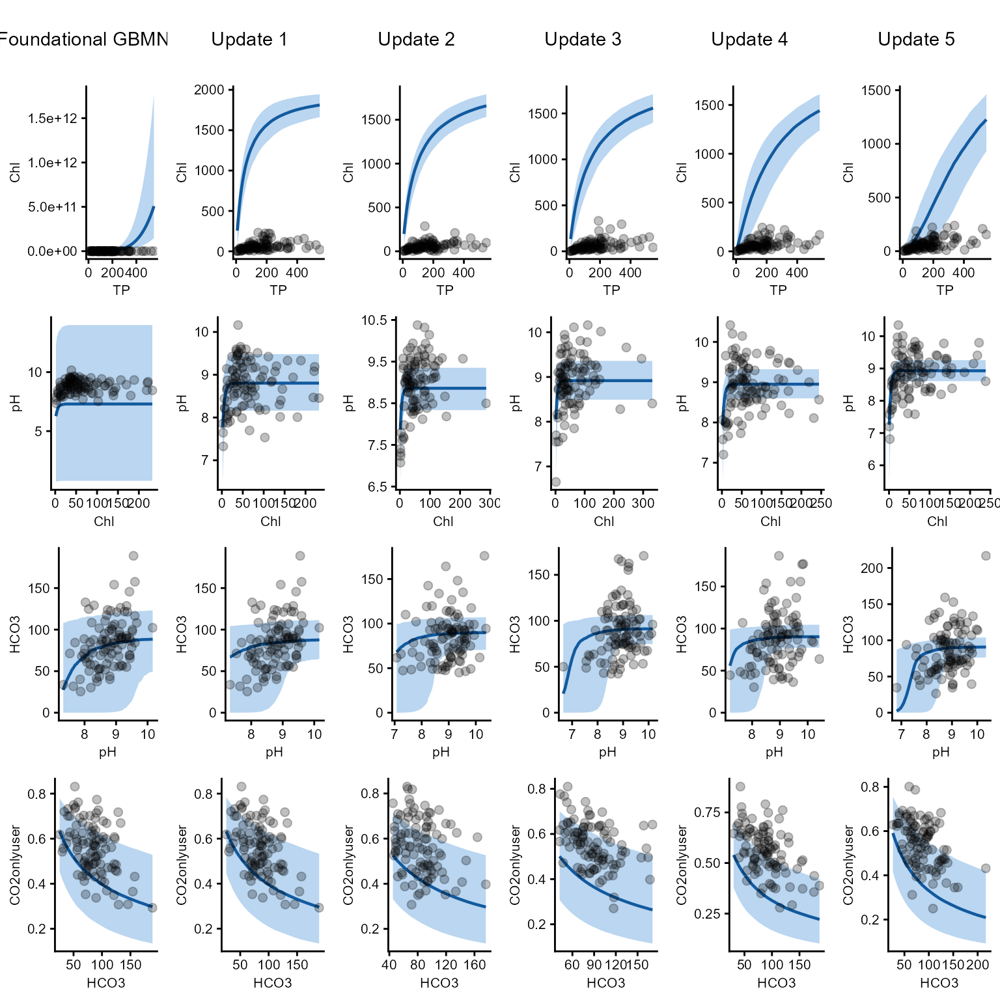
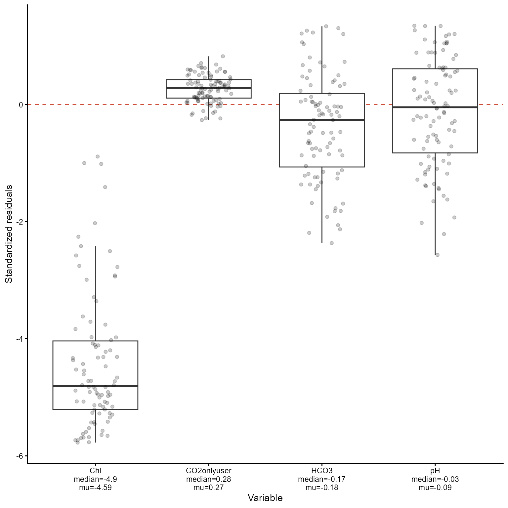
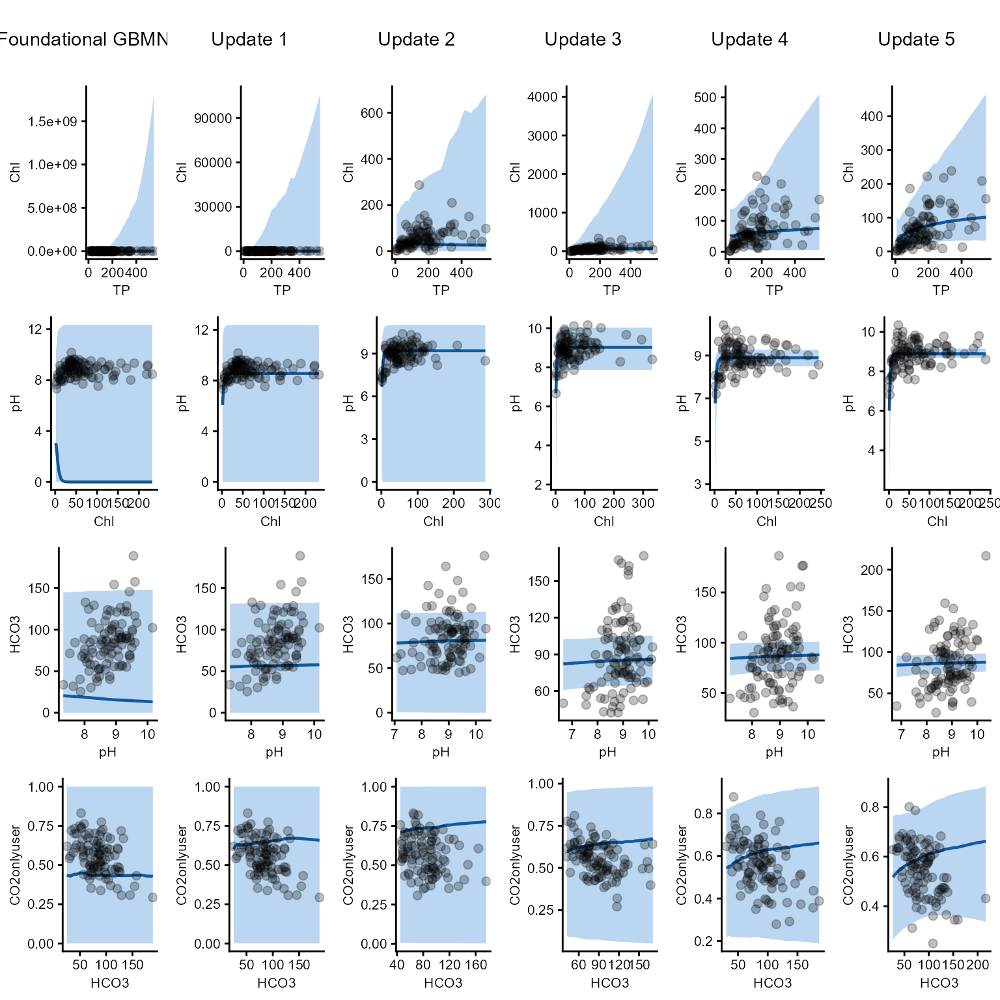
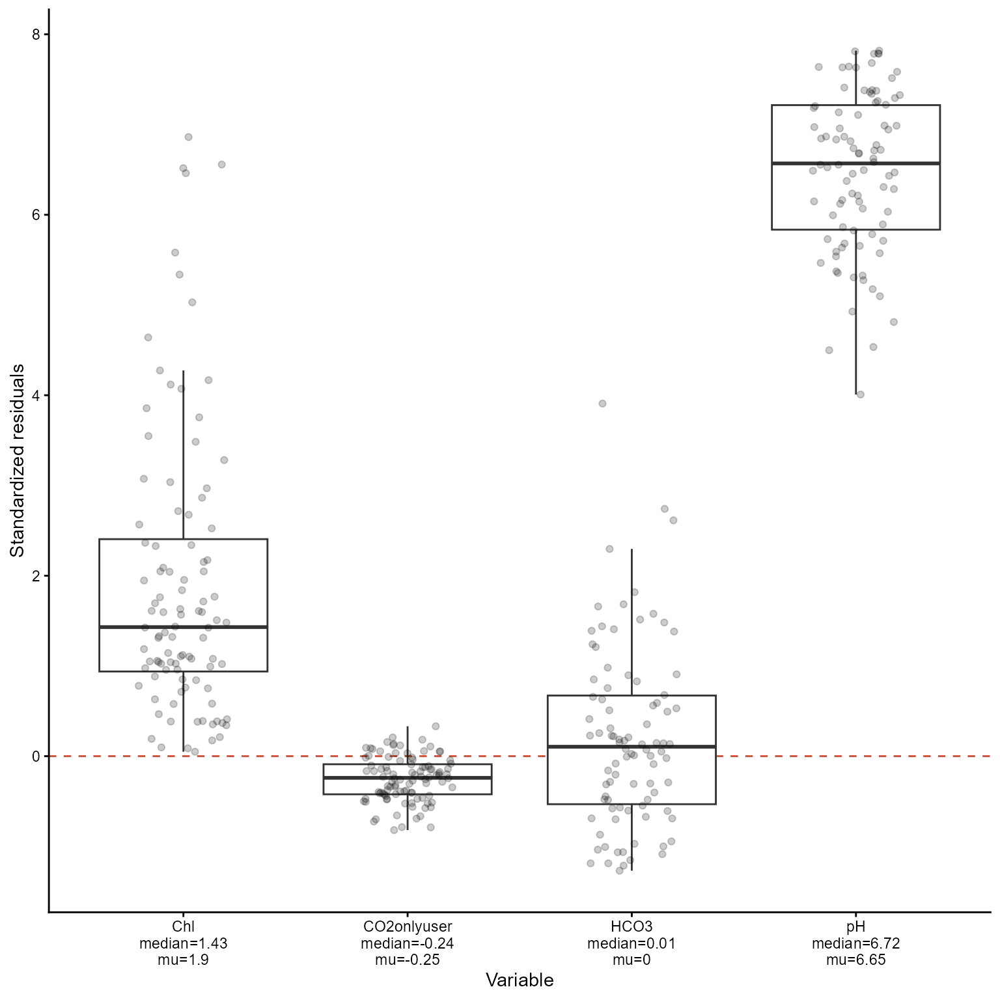
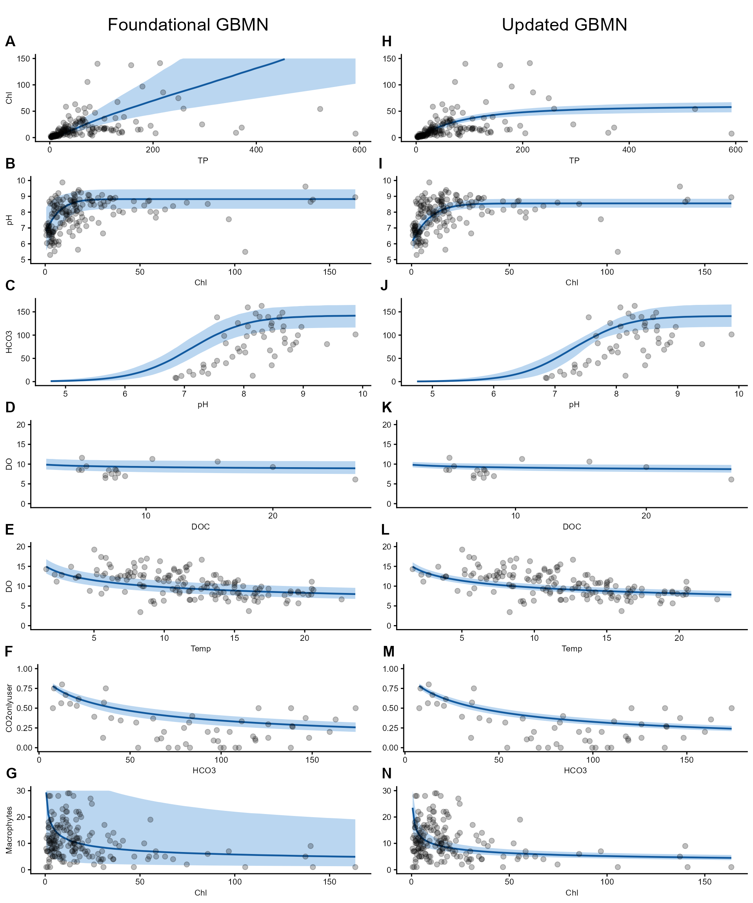

Introduction
This section is intended to experiment with and explore the GBMN method/framework. To understand how it behaves under different conditions, one of the most informative approaches is to “crash-test” it. Understanding the limits of the method is important for determining what it can and cannot do, as well as for identifying possible new diagnostics to assess when it fails.
I have only recently started exploring this aspect of the GBMN method, as my initial focus was on developing and implementing the method itself. Nevertheless, there are already some situations in which failure is expected. For example, a highly unrealistic priors (e.g., the foundational GBMN) can cause the method to break down.
Simple sequential update
Below is an example of a setting in which the method does work. Sequential updating is a particularly important use case I have in mind for the GBMN framework. Suppose that we obtain batches of 100 samples from an ecosystem (e.g, for example, from a lake catchment area) once per year over a period of five years. Each batch is then fed sequentially into the GBMN, allowing us to examine how the model updates as new data become available. The figure following the code illustrates this updating process.
library(HeMiE)
library(ggplot2)
library(cowplot)
#set number of sequential updates
number_sequential <- 5
#create a network
example_data <- data.frame(
edge = c(
rep("Chl~TP", 3),
rep("Chl~TP", 2),
rep("pH~Chl", 3),
rep("HCO3~pH", 3),
rep("CO2onlyuser~HCO3", 2)),
`function` = c(
rep("sigmoidal", 3),
rep("log10", 2),
rep("sigmoidal", 3),
rep("sigmoidal", 3),
rep("logit", 2)),
transformation = c(
rep("log", 3),
rep("log10", 2),
rep(NA, 3),
rep(NA, 3),
rep("log", 2)),
parameter = c(
"b0","b1","b2",
"b0","b1",
"b0","b1","b2",
"b0","b1","b2",
"b0","b1"),
estimate = c(
100, 4, 0.5, # Chl ~ TP
-1.1, 1, # Chl ~ TP
7.5, -6, 4, # pH ~ Chl
90, 7.5, 0.2, # HCO3 ~ pH
2.8,-0.7), # CO2onlyuser ~ HCO3
error = c(
20, 0.5, 0.25,
0.3, 0.4,
4, 2, 1,
20, 1.5, 0.05,
0.3, 0.1))
#create formula
formula <- list(c(fun="sigmoidal", edge="Chl~TP", trans="log"),
c(fun="log10", edge="Chl~TP", trans="log10"),
c(fun="sigmoidal", edge="pH~Chl"),
c(fun="sigmoidal", edge="HCO3~pH"),
c(fun="logit", edge="CO2onlyuser~HCO3", trans="log"))
#build gbmn
mod1 <- build_gbmn(formula, example_data)
#this is the gbmn structure
mod1$PlotDBN
#create a dgp gbmn
mod_dgp <- mod1
#select some 'true' and fixed params
true_par <- list(
`ef1` = c(b0=110, b1=4.5, b2=.7),
`ef2` = c(b0=-0.8, b1=.9),
`ef3` = c(b0=9, b1=-7, b2=6),
`ef4` = c(b0=100, b1=7, b2=1),
`ef5` = c(b0=2.4, b1=-.5))
#store the params
for(e in names(mod_dgp$Parameters)){
for(p in names(mod_dgp$Parameters[[e]])){
mod_dgp$Parameters[[e]][[p]]["mu"] <- true_par[[e]][p]}}
#gamma simulator
rgamma_sim <- function(mu, sd){rgamma(length(mu), shape = mu^2/sd^2,rate = mu/sd^2)}
#set TP concentration
set.seed(123)
TP_sim <- rgamma(100, 200^2/150^2, 200/150^2)
#create storage location
test_dfs <- list()
#create 5 realized data sets
for(d in seq_len(number_sequential)){
mu_Chl <- HeMiE:::.gbmn_predict_edge("sigmoidal", true_par$ef1, trans="log", TP_sim)
Chl_sim <- rgamma_sim(mu_Chl, mu_Chl/1.5)
mu_pH <- HeMiE:::.gbmn_predict_edge("sigmoidal", true_par$ef3, trans=NA, Chl_sim)
pH_sim <- rgamma_sim(mu_pH, rep(.5, length(mu_pH)))
mu_HCO3 <- HeMiE:::.gbmn_predict_edge("sigmoidal", true_par$ef4, trans=NA, pH_sim)
HCO3_sim<- rgamma_sim(mu_HCO3, mu_HCO3/3)
mu_CO2 <- plogis(true_par$ef5[1]+true_par$ef5[2]*log(HCO3_sim))
CO2onlyuser <- rbeta(length(mu_CO2), shape1 = mu_CO2*20,
shape2 = (1-mu_CO2)*20)
test_dfs[[d]] <- data.frame(
TP = TP_sim,
Chl = Chl_sim,
pH = pH_sim,
HCO3 = HCO3_sim,
CO2onlyuser = CO2onlyuser)}
#sequentially update the gbmn on the different data sets
mod_list <- vector("list", (number_sequential+1))
mod_list[[1]] <- mod1
for(u in 2:length(mod_list)){
m <- u-1
mod_list[[u]] <- update_gbmn(mod_list[[m]], test_dfs[[m]])}
#plot df correct lengths first one should be duplicated
plot_dfs <- c(test_dfs[1], test_dfs)
#plot all childs and variables
vars <- c("Chl", "pH", "HCO3", "CO2onlyuser")
var_list <- setNames(
lapply(vars, function(v){Map(function(mod, dat)
marginal_gbmn(mod, child = v, data = dat),
mod_list, plot_dfs)}), vars)
#create labels for above the figures
labs <- c("Foundational GBMN", paste("Update", seq_len(number_sequential)))
labtext <- lapply(seq_len(number_sequential+1), function(l)
ggplot() +
annotate("text", label=labs[l], x=0, y=0)+
theme_void())
#create correct order for figs
figs <- seq_len(number_sequential+1)
fig_list <- c(
labtext[figs],
lapply(figs, \(i) var_list$Chl[[i]][[3]]),
lapply(figs, \(i) var_list$pH[[i]][[1]]),
lapply(figs, \(i) var_list$HCO3[[i]][[1]]),
lapply(figs, \(i) var_list$CO2onlyuser[[i]][[1]]))
#plot all the figures together
cowplot::plot_grid(
plotlist = fig_list,
ncol = (number_sequential+1),
rel_heights = c(1, 3, 3, 3, 3, 3))
Sequential updating and poorly specified priors at roots
If poorly specified priors are present at root nodes, biased predictions can propagate downstream through the network. As a consequence, the corresponding edge functions may also converge toward parameter regions that are ecologically implausible or otherwise outside a reasonable range. Such behaviour can, however, be diagnosed by visually inspecting the marginal plots or by examining the residual distributions in the boxplots.
At the same time, this provides a useful learning opportunity. If the foundational GBMN is based on a large amount of synthesized literature, but repeated updating with new data consistently drives the model away from a decent fit, this indicates a substantive issue that requires explanation. Either the new data are unrepresentative or problematic, or the prior information synthesized from the literature does not generalize to the system under study. In that way, disagreement between the foundational GBMN and new observations can itself reveal an important gap in our understanding.
#create a network
example_data <- data.frame(
edge = c(
rep("Chl~TP", 3),
rep("Chl~TP", 2),
rep("pH~Chl", 3),
rep("HCO3~pH", 3),
rep("CO2onlyuser~HCO3", 2)),
`function` = c(
rep("sigmoidal", 3),
rep("log10", 2),
rep("sigmoidal", 3),
rep("sigmoidal", 3),
rep("logit", 2)),
transformation = c(
rep("log", 3),
rep("log10", 2),
rep(NA, 3),
rep(NA, 3),
rep("log", 2)),
parameter = c(
"b0","b1","b2",
"b0","b1",
"b0","b1","b2",
"b0","b1","b2",
"b0","b1"),
estimate = c(
2000, 4, 1, # Chl ~ TP #bad priors for asymptote and scale
-0.3, 4.5, # Chl ~ TP #bad priors for slope and intercept
7.5, -6, 4, # pH ~ Chl
90, 7.5, 0.2, # HCO3 ~ pH
2.8, -0.7), # CO2onlyuser ~ HCO3
error = c(
20, 0.3, 0.2,
0.2, 0.1,
4, 2, 1,
20, 1.5, 0.05,
0.3, 0.1))
#build gbmn
mod1 <- build_gbmn(formula, example_data)
#sequentially update the gbmn on the different data sets
mod_list <- vector("list", (number_sequential+1))
mod_list[[1]] <- mod1
for(u in 2:length(mod_list)){
m <- u-1
mod_list[[u]] <- update_gbmn(mod_list[[m]], test_dfs[[m]])}
#plot df correct lengths first one should be duplicated
plot_dfs <- c(test_dfs[1], test_dfs)
#plot all childs and variables
vars <- c("Chl", "pH", "HCO3", "CO2onlyuser")
var_list <- setNames(
lapply(vars, function(v){Map(function(mod, dat)
marginal_gbmn(mod, child = v, data = dat),
mod_list, plot_dfs)}), vars)
#create labels for above the figures
labs <- c("Foundational GBMN", paste("Update", seq_len(number_sequential)))
labtext <- lapply(seq_len(number_sequential+1), function(l)
ggplot() +
annotate("text", label=labs[l], x=0, y=0)+
theme_void())
#create correct order for figs
figs <- seq_len(number_sequential+1)
fig_list <- c(
labtext[figs],
lapply(figs, \(i) var_list$Chl[[i]][[3]]),
lapply(figs, \(i) var_list$pH[[i]][[1]]),
lapply(figs, \(i) var_list$HCO3[[i]][[1]]),
lapply(figs, \(i) var_list$CO2onlyuser[[i]][[1]]))
#plot all the figures together
cowplot::plot_grid(
plotlist = fig_list,
ncol = (number_sequential+1),
rel_heights = c(1, 3, 3, 3, 3, 3))
#display the residuals of the first update
mod_list[[2]]$Residuals$resid_boxplot
Sequential updating and non-informative prior
Using non-informative priors, the GBMN should in principle still update appropriately, although convergence may be slower because the initial parameter space is much broader. This also appears to be the case here. The fit for all remains sub optimal. A similar issue arises when fitting non-linear models by maximum likelihood, where successful numerical optimization can depend strongly on the specification of suitable starting values, particularly when the objective function contains multiple local optima or poorly identified regions.
#create a network
example_data <- data.frame(
edge = c(
rep("Chl~TP", 3),
rep("Chl~TP", 2),
rep("pH~Chl", 3),
rep("HCO3~pH", 3),
rep("CO2onlyuser~HCO3", 2)),
`function` = c(
rep("sigmoidal", 3),
rep("log10", 2),
rep("sigmoidal", 3),
rep("sigmoidal", 3),
rep("logit", 2)),
transformation = c(
rep("log", 3),
rep("log10", 2),
rep(NA, 3),
rep(NA, 3),
rep("log", 2)),
parameter = c(
"b0","b1","b2",
"b0","b1",
"b0","b1","b2",
"b0","b1","b2",
"b0","b1"),
estimate = c(
200, 0, 0, # Chl ~ TP
0, 0, # Chl ~ TP
7.5, 0, 0, # pH ~ Chl
90, 0, 0, # HCO3 ~ pH
0, 0), # CO2onlyuser ~ HCO3
error = c(
100, 2, 2,
2, 2,
4, 2, 2,
45, 2, 2,
2, 2))
#build gbmn
mod1 <- build_gbmn(formula, example_data)
#sequentially update the gbmn on the different data sets
mod_list <- vector("list", (number_sequential+1))
mod_list[[1]] <- mod1
for(u in 2:length(mod_list)){
m <- u-1
mod_list[[u]] <- update_gbmn(mod_list[[m]], test_dfs[[m]])}
#plot df correct lengths first one should be duplicated
plot_dfs <- c(test_dfs[1], test_dfs)
#plot all childs and variables
vars <- c("Chl", "pH", "HCO3", "CO2onlyuser")
var_list <- setNames(
lapply(vars, function(v){Map(function(mod, dat)
marginal_gbmn(mod, child = v, data = dat),
mod_list, plot_dfs)}), vars)
#create labels for above the figures
labs <- c("Foundational GBMN", paste("Update", seq_len(number_sequential)))
labtext <- lapply(seq_len(number_sequential+1), function(l)
ggplot() +
annotate("text", label=labs[l], x=0, y=0)+
theme_void())
#create correct order for figs
figs <- seq_len(number_sequential+1)
fig_list <- c(
labtext[figs],
lapply(figs, \(i) var_list$Chl[[i]][[3]]),
lapply(figs, \(i) var_list$pH[[i]][[1]]),
lapply(figs, \(i) var_list$HCO3[[i]][[1]]),
lapply(figs, \(i) var_list$CO2onlyuser[[i]][[1]]))
#plot all the figures together
cowplot::plot_grid(
plotlist = fig_list,
ncol = (number_sequential+1),
rel_heights = c(1, 3, 3, 3, 3, 3))
#display the residuals of the first update
mod_list[[2]]$Residuals$resid_boxplot
Coverage probability of the expected value from the generalized posterior
In the preceding analyses, the learning rate () was selected using repeated hold-out validation. In each of 20 repetitions, 80% of the observations were used to calculate generalized posterior particle weights for a sequence of candidate learning rates. The resulting weights were evaluated against the prediction losses of the remaining 20% of observations. The learning rate minimizing the average weighted hold-out loss was selected, subject to a minimum effective sample size (ESS) constraint.
Although this procedure provides a predictive criterion for determining the strength of updating, it does not explicitly calibrate the coverage properties of the resulting generalized posterior credible intervals.
As an alternative, we explored bootstrap-based learning-rate calibration, motivated by generalized posterior calibration methods (Syring & Martin, 2019; Tanaka, 2024). We generated () bootstrap samples of the updating data set by re-sampling complete observation rows with replacement. For each bootstrap sample and candidate learning rate, particle-specific losses were used to calculate generalized posterior weights. These weights defined equal-tailed credible intervals for the expected predictions of each observed child vertex.
For every observed observation–vertex combination, we evaluated whether the corresponding full data expected prediction of the generalized posterior fell within the bootstrap credible interval. The learning rate was selected to minimize the absolute difference between the average bootstrap inclusion frequency at a credibility level of 90%.
Under this criterion, a calibrated 90% interval has the following operational interpretation: across bootstrap of the net data set, approximately 90% of the resulting generalized posterior credible intervals contain the corresponding full data expected prediction, averaged over the selected observations.
However, this criterion does not establish that the intervals contain the true expected ecological responses with 90% frequentist coverage, nor does it guarantee simultaneous coverage across the network.
We evaluated this approach using the lake ecosystem GBMN described in the main text. Although the resulting updated relationships remained interpretable and the credible intervals became narrower, the calibration procedure produced severe particle-weight degeneracy. For example, with 15,000 prior particles, the selected was approximately 47.0, with an ESS of only 2.6. Increasing the number of particles to 25,000 yielded a of approximately 38.9 and an ESS of 2.3.
These results suggest that the bootstrap inclusion criterion, combined with importance re-weighting of a fixed set of prior particles, does not yet provide a numerically reliable calibration procedure for this GBMN. The informative meta-analysis-derived priors, dependence among network predictions, and concentration of posterior weight on a small number of particles may all contribute to this difficulty.
Moreover, the updated GBMN approximates the re-weighted parameter distribution through estimated means and covariances before generating subsequent predictions. Intervals produced from this approximation are not necessarily identical to the particle-weighted intervals used during bootstrap calibration.
Consequently, we retain hold-out predictive calibration as the primary method in the current application. Improving the numerical representation of the generalized posterior, potentially through a combination between SMC-method with particle rejuvenation or MCMC-methods and evaluating predictive coverage under controlled simulation scenarios remain important directions for future development.
#upload the meta data
load("C:/Users/admin/OneDrive/Bureaublad/HeMiE/data/meta_data.rda")
#create formula
formula=list(c(fun="sigmoidal", edge="Chl~TP", trans="log"),
c(fun="log10", edge="Chl~TP", trans="log10"),
c(fun="log", edge="Macrophytes~Chl+Temp+CO2onlyuser", trans="log"),
c(fun="class", edge="Characeae~Chl"),
c(fun="sigmoidal", edge="pH~Chl"),
c(fun="sigmoidal", edge="CO2~pH"),
c(fun="logit", edge="CO2onlyuser~HCO3", trans="log"),
c(fun="log", edge="DOC~Chl", trans="log"),
c(fun="log", trans="log", edge="DO~DOC+Temp"),
c(fun="sigmoidal", edge="HCO3~pH"))
#create foundational gbmn
foundational_gbmn <- build_gbmn(formula, meta_data)
#plot the predictions of the foundational gbmn
p1 <- marginal_gbmn(foundational_gbmn, child = "Chl", data = train_data, ylim = c(0, 150))
p3 <- marginal_gbmn(foundational_gbmn, child = "pH", data = train_data, ylim = c(5, 10))
p5 <- marginal_gbmn(foundational_gbmn, child = "HCO3", data = train_data, ylim=c(0, 170))
p7 <- marginal_gbmn(foundational_gbmn, child = "DO", data = train_data, ylim=c(0,20))
p9 <- marginal_gbmn(foundational_gbmn, child = "CO2onlyuser", data = train_data)
p11<- marginal_gbmn(foundational_gbmn, child = "Macrophytes", data = train_data, ylim=c(0,30), n_grid=150)
#update the goundational gbmn using the coverage criteria
updated_gbmn <- update_gbmn(foundational_gbmn, new_data = train_data,
up_character = 150, #150 bootstraps
nsim=15000, method = "coverage")
#plot the predictions of the foundational gbmn
p2 <- marginal_gbmn(updated_gbmn, child = "Chl", data = train_data, ylim = c(0, 150))
p4 <- marginal_gbmn(updated_gbmn, child = "pH", data = train_data, ylim = c(5, 10))
p6 <- marginal_gbmn(updated_gbmn, child = "HCO3", data = train_data, ylim=c(0, 170))
p8 <- marginal_gbmn(updated_gbmn, child = "DO", data = train_data, ylim=c(0,20))
p10<- marginal_gbmn(updated_gbmn, child = "CO2onlyuser", data = train_data)
p12<- marginal_gbmn(updated_gbmn, child = "Macrophytes", data = train_data, ylim=c(0,30), n_grid=150)
#create titles
plt1 <- ggplot(data.frame(x=c(0,1), y=c(0,1)), aes(x,y))+
annotate("text", x=0.5, y=0.5, label="Foundational GBMN", size=6)+
theme_classic()+
theme(axis.line = element_blank(),
axis.text = element_blank(),
axis.ticks = element_blank(),
axis.title = element_blank())
plt2 <- ggplot(data.frame(x=c(0,1), y=c(0,1)), aes(x,y))+
annotate("text", x=0.5, y=0.5, label="Updated GBMN", size=6)+
theme_classic()+
theme(axis.line = element_blank(),
axis.text = element_blank(),
axis.ticks = element_blank(),
axis.title = element_blank())
#plot together
figure <- cowplot::plot_grid(plt1, plt2,
p1[[3]], p2[[3]]+theme(axis.title.y = element_blank()),
p3[[1]], p4[[1]]+theme(axis.title.y = element_blank()),
p5[[1]], p6[[1]]+theme(axis.title.y = element_blank()),
p7[[1]], p8[[1]]+theme(axis.title.y = element_blank()),
p7[[2]], p8[[2]]+theme(axis.title.y = element_blank()),
p9[[1]], p10[[1]]+theme(axis.title.y = element_blank()),
p11[[1]], p12[[1]]+theme(axis.title.y = element_blank()),
ncol=2, rel_heights = c(2,5,5,5,5,5,5,5),
label_y = 1.15,
labels = c(NA, NA, "A", "H", "B", "I", "C", "J", "D", "K", "E", "L", "F", "M", "G", "N"))
print(figure)